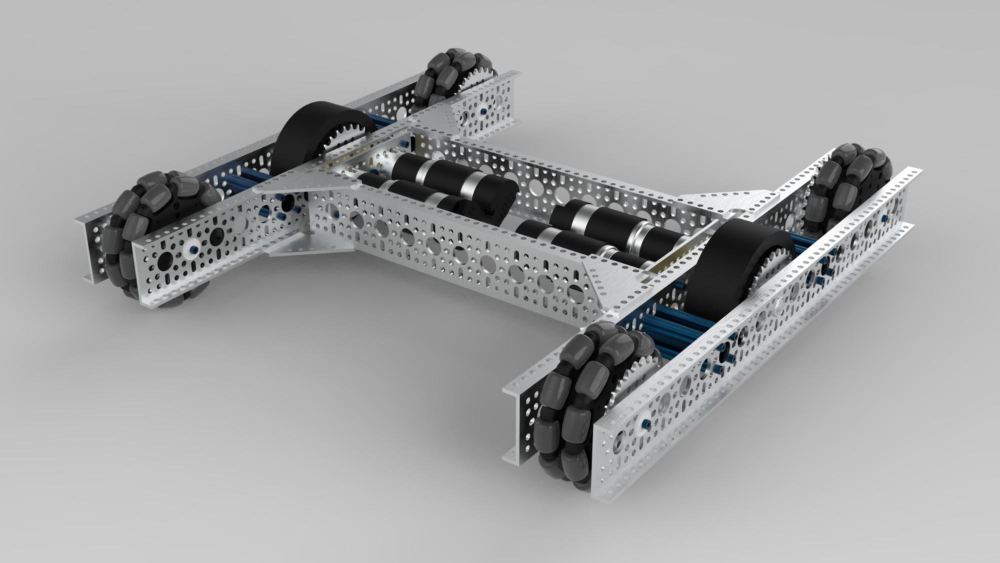
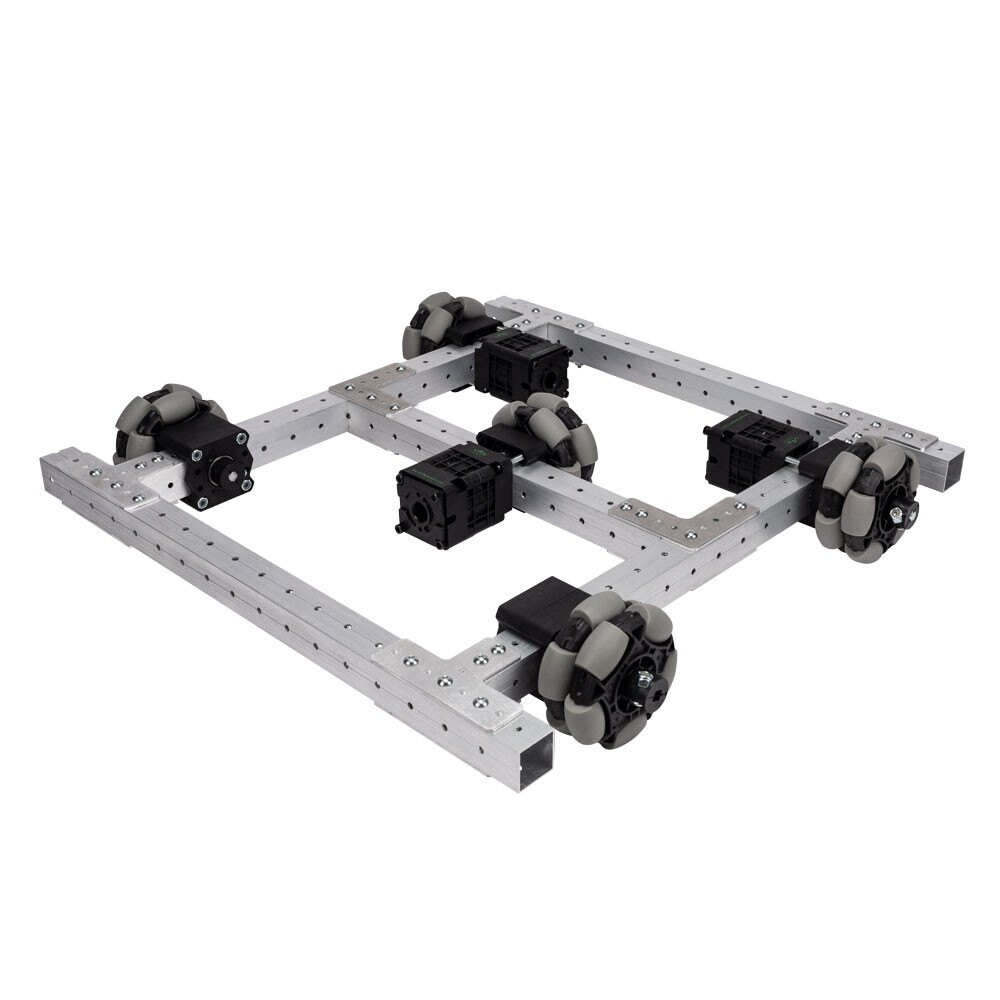
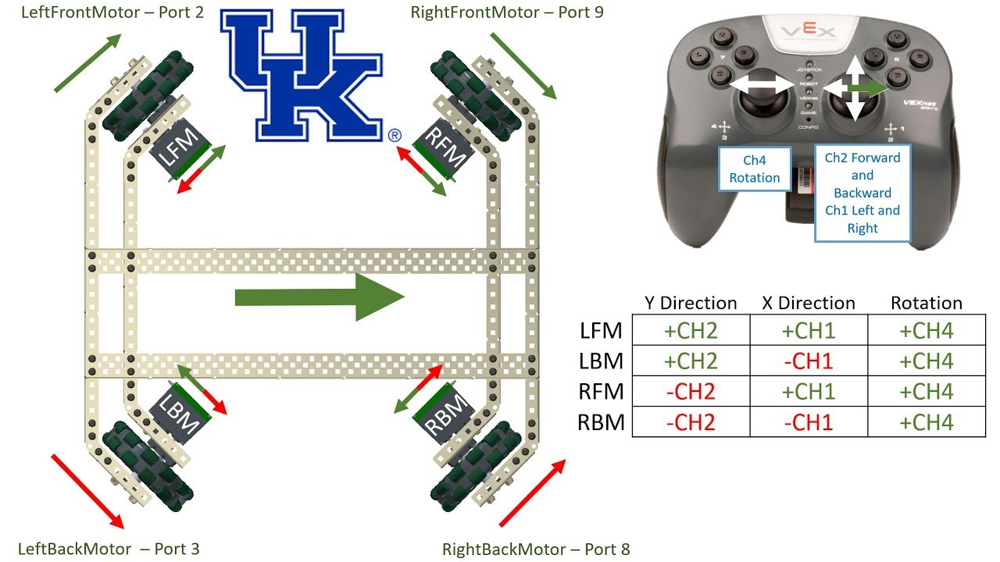
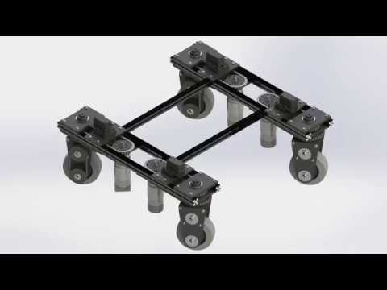
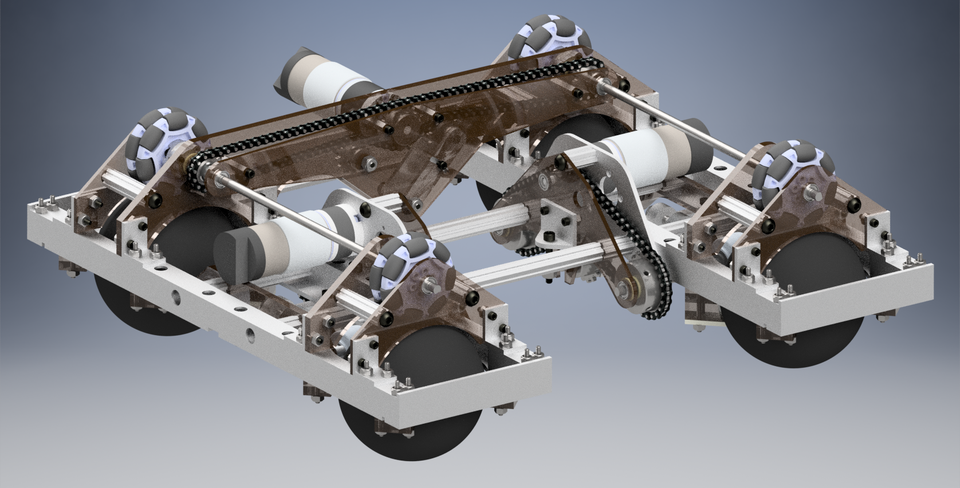

While I consider the drivetrain to be an essential component of an FTC robot, I believe it is quite possibly the least important of the major 4 mechanisms. That belief, however, is based on the assumption that you build a quality drivetrain.
While a drivetrain will most likely never win you a match by itself, it can definitely lose them for you. Due to this, drivetrain design must place an emphasis on consistency and reliability, as well as quality.

Tank Drive is the classic FTC drivetrain, and one of the two drivetrains I will always recommend.
The variant shown above is 6 wheel tank drive.
Tank Drive provides your robot with great pushing power, the ability to resist or play defense, easier autonomous programming, and the ability to use an aggressive drive gear ratio. However, it is not a holonomic drivetrain.
That is to say, it cannot translate sideways.
Tank drives are created using a combination of omni wheels and traction wheels. You can experiment with these combinations, but I generally recommend omnis on the outside and traction wheels in the middle, as seen above. This provides you with both strong turning and lots of traction.
It is essential to "drop" your middle wheels by a small amount (1/8" or around that) compared to your outer wheels. Without this, tank drives can have issues with turning.
Mecanum is the most common FTC drivetrain, and the second of the drivetrains that I will always recommend. The drivetrain shown above is the 731 Rover Ruckus drivetrain.
Mecanum drivetrains utilize mecanum wheels, arranged in the pattern of an X with the rollers from the top, in order to achieve sideways translation, or "strafing".
Each wheels needs to be powered independently in order to allow the drivetrain to move in every possible direction.
Due to their versatility and freedom of movement, mecanum drivetrains are a good choice for any game. It is important to note that strafing speed is slower than normal movements, and that wheel slippage can be an issue with mecanum wheels due to the bearings and bushings in the rollers, making them open to defense.

H-Drive, although more common in FRC, has been used for FTC purposes due to its strafing capabilities as a holonomic drivetrain. The image shown above is the VexPro FTC H-Drive kit.
This drivetrain is easy to identify, as the wheels are in the shape of an 'H'. The drivetrain acts as a tank drive until you power the middle wheel. Because all of the other wheels are omni wheels and allow for strafing, this powered middle wheel lets the bot move in all directions.
Multiple large weaknesses keep this drivetrain from being common in FTC at a high level. Due to all of the wheels being omnis, the drivetrain is easy to push around. The middle wheel also must be
independently powered, leading to the need of an awkward number of motors (3 or 5). Finally, the middle wheel often needs to be utilized with a complex rocker or springing system in order to maintain contact with the ground if there are any obstacles or terrain on the field.

X-Drive is the second most common holonomic drivetrain used in FTC. The drivetrain shown above is a UK Vex X-Drive with programming instructions.
This drivetrain relies on 4 independently powered omni-wheels at 45 degree angles, allowing for holonomic motion. While its top speed is normally slightly lower than that
of another drivetrain, it is the only holonomic drivetrain that can strafe as fast as it can move forward. For this reason, X-Drive is an attractive option for many teams.
There are several things that you must consider when making an X-Drive. Efficient and competitive X-Drives are hard to design. You must support each omni wheel on both sides if you hope to achieve accurate motion tracking. This drivetrain also doesn't work well with the passthrough design that ends up being the meta in most FTC games.

Swerve is the most complex of the drivetrains found in FTC. The swerve drive shown above is from FTC 8802.
Swerve drives utilizes 4 traction wheels. Each wheel has one motor driving it and one motor rotating the wheel module, allowing the drivetrain to move in any direction.
I do not recommend using swerve drive in FTC, due to several factors. While the drivetrain is theoretically the optimial drivetrain due to its maneuverability and traction combination, it is bulky and complex. The potential for failure is high, and you aren't gaining more than a minor advantage through swerve.

Ball drive is an uncommon drivetrain in FTC that involves rotating four spheres using omni wheels in order to achieve holonomic motion. The image above is the first ball drive ever created for FTC.
While I would not recommend using ball drive for competition, there are several advantages that make it appealing. It only requires 3 motors, is good at maneuvering over terrain, and can move with solid amounts of speed. However, it is complex and bulky, justifying any decision not to use it.